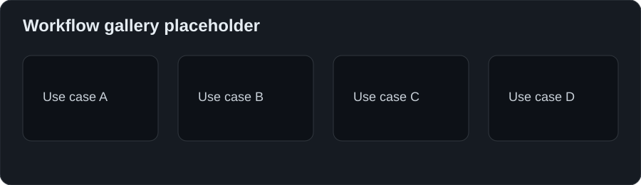
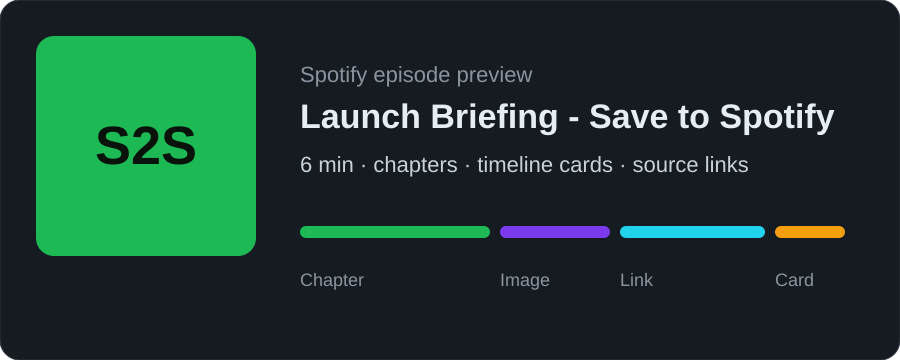
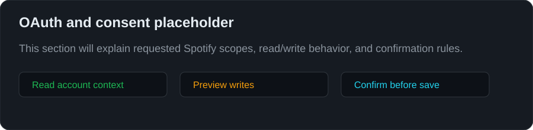

Save to Spotify
The official Spotify skill for saving agent-made audio to Spotify.
Ask your agent for audio. Get a Spotify episode with metadata, cover art, chapters, timeline images, links, and Spotify cards.
OfficialSkills · ClawHub · Install · Quick start
Install
Prompt your agent to install:
> Install Save to Spotify by running https://saveto.spotify.com/install.shOr run it yourself:
curl -fsSL https://saveto.spotify.com/install.sh | bash
save-to-spotify auth login
save-to-spotify doctorQuick start
Give your agent a source and a destination:
Turn [placeholder source] into a [placeholder length] Spotify episode.
Use [placeholder tone].
Save it to [placeholder show].
Preview before uploading.Good sources can be files, links, notes, transcripts, or existing audio.

What you get
- Spotify episode upload
- show and episode metadata
- cover image
- chapters
- timeline images
- source links
- Spotify entity cards
- readiness checks

Useful commands
save-to-spotify auth status
save-to-spotify doctor
save-to-spotify upload ./episode.mp3 --title "[placeholder title]"
save-to-spotify --json timeline validate --from-file timeline.jsonSafety
Save to Spotify should be easy to trust:
- preview before upload or write actions
- show the active Spotify account
- explain requested OAuth scopes
- separate read-only checks from changes
- validate the result after upload

For agent builders
Keep the skill simple and helpful:
- start from user intent, not CLI flags
- ask only what changes the result
- use sensible defaults
- preview before mutation
- return links and validation status
- recover clearly from auth, rate limits, or partial failures
Other install paths
openclaw skills install @spotify/save-to-spotify
npx skills add spotify/save-to-spotifyPlaceholder assets
Replace these before launch:
assets/workflow-gallery.svgassets/episode-card-placeholder.svgassets/timeline-preview.svgassets/oauth-scope-preview.svg